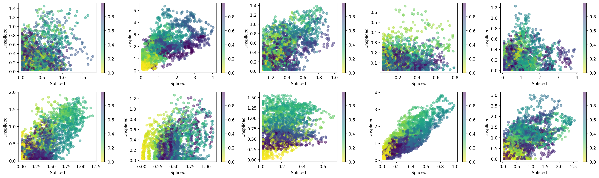
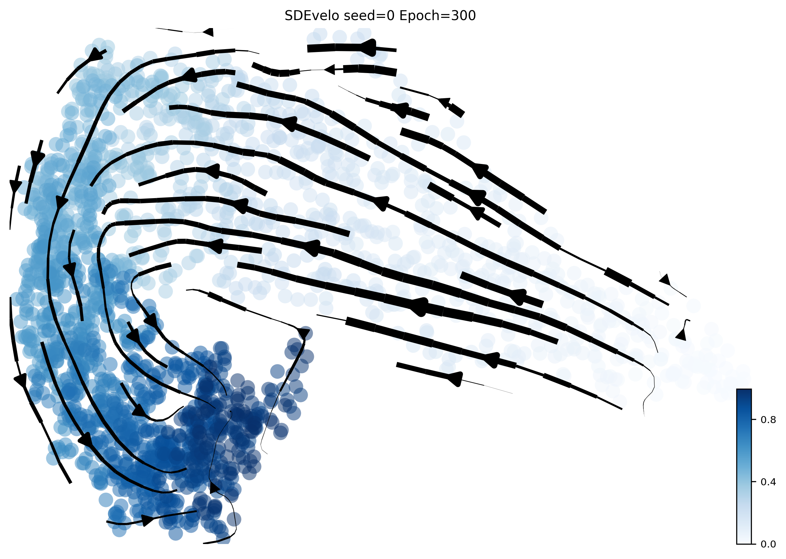
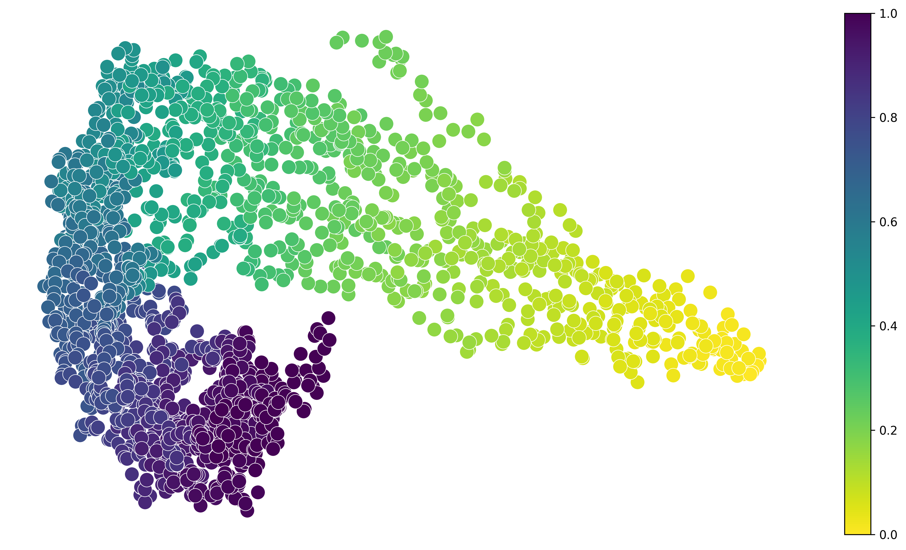
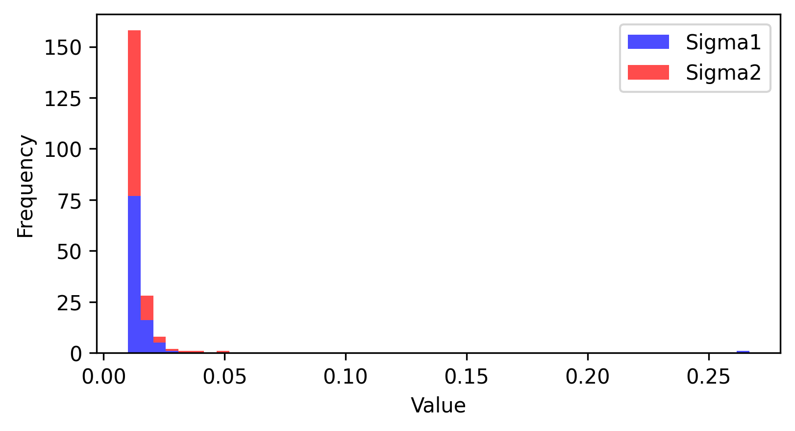

Generate SDE-based simulation data
[1]:
# import sdevelo as sv
import sv
simulation = sv.SimData(n_vars=100)
adata = simulation.generate()
# Simulation unspliced and spliced scatter plot
simulation.plot_scatter(n1=2, n2=5)
(Working on SDEvelo)
2024-09-13 15:29:17

Train SDEvelo model
[2]:
args = sv.Config()
model = sv.SDENN(args, adata)
adata = model.train(100)
cuda
WARNING: Did not normalize X as it looks processed already. To enforce normalization, set `enforce=True`.
WARNING: Did not normalize spliced as it looks processed already. To enforce normalization, set `enforce=True`.
WARNING: Did not normalize unspliced as it looks processed already. To enforce normalization, set `enforce=True`.
Skip filtering by dispersion since number of variables are less than `n_top_genes`.
Logarithmized X.
computing neighbors
finished (0:00:08) --> added
'distances' and 'connectivities', weighted adjacency matrices (adata.obsp)
computing moments based on connectivities
finished (0:00:00) --> added
'Ms' and 'Mu', moments of un/spliced abundances (adata.layers)
2000
Epoch: 0, Loss: 0.762, alpha: 1.34, beta: 3.24, gamma: 1.07, s1: 0.011, s2: 0.010, t_m: 0.513, u_shift: -0.005, s_shift: -0.002
Epoch: 50, Loss: 0.504, alpha: 2.35, beta: 4.50, gamma: 3.57, s1: 0.010, s2: 0.010, t_m: 0.631, u_shift: 0.007, s_shift: 0.100
Visualization
[3]:
args.vis_type_col = 'true_t'
kwargs = dict(fontsize=10, density=0.8, arrow_size=2, linewidth=4, cmap='Blues', alpha=0.5)
sv.plot_streamline(adata, args, **kwargs)
computing velocity graph (using 10/128 cores)
finished (0:00:03) --> added
'sde_velocity_graph', sparse matrix with cosine correlations (adata.uns)
--> added 'sde_velocity_length' (adata.obs)
--> added 'sde_velocity_confidence' (adata.obs)
--> added 'sde_velocity_confidence_transition' (adata.obs)
computing velocity embedding
finished (0:00:00) --> added
'sde_velocity_pca', embedded velocity vectors (adata.obsm)

[4]:
sv.plot_latent_time(adata, args)

[5]:
sv.plot_noise_histogram(adata)

[ ]: